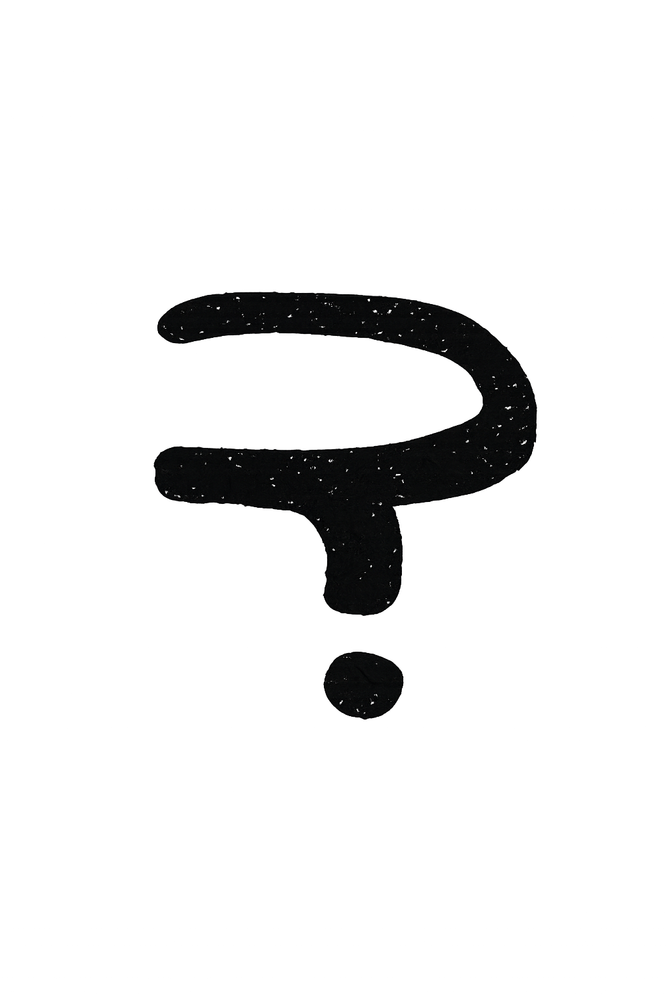
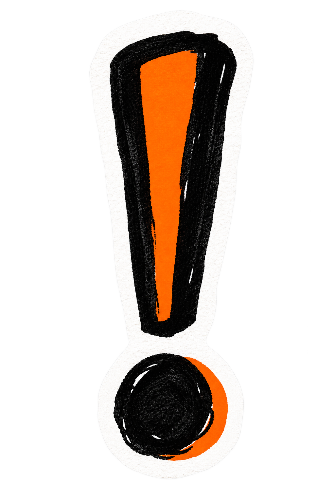
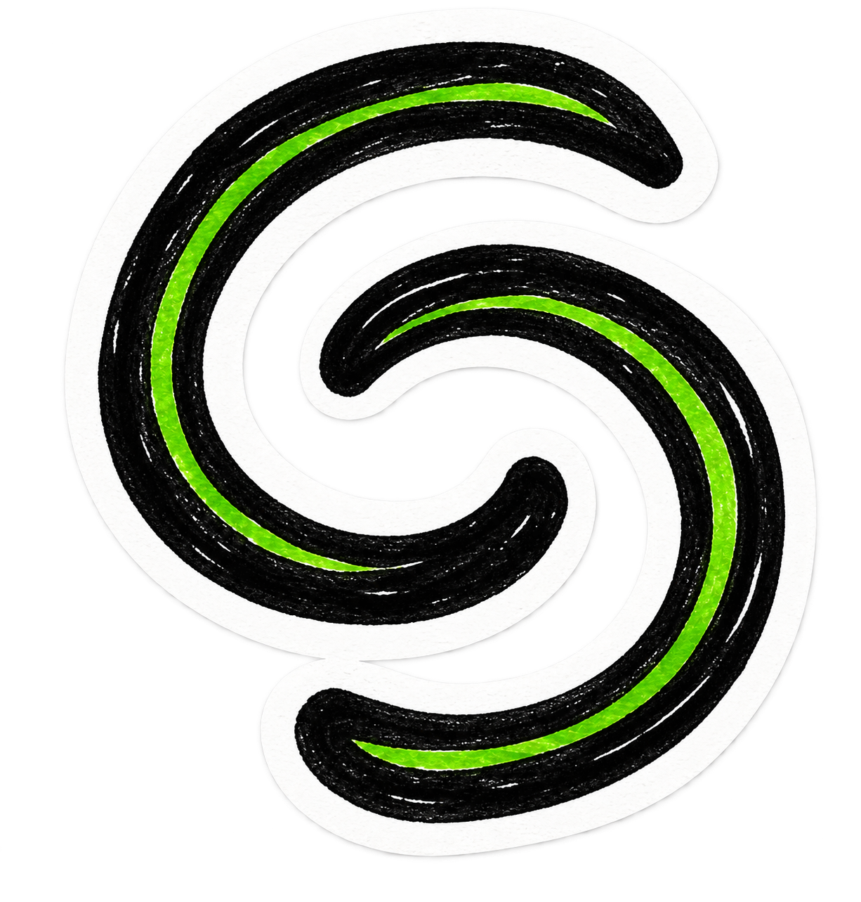

+
No es terapia. No es productividad. Es un momento de pausa, cada día, para pensar con intención.
La misma para todos, para pensar juntos aunque cada uno responda por su cuenta. Solo disponible 24 horas.

Las preguntas se organizan en ciclos de unas semanas, cada uno con su propio tema y su propio ritmo.
Pequeñas acciones para salir de la inercia, si te apetece llevar la reflexión un paso más allá.
Tus respuestas son tuyas. Siempre privadas.